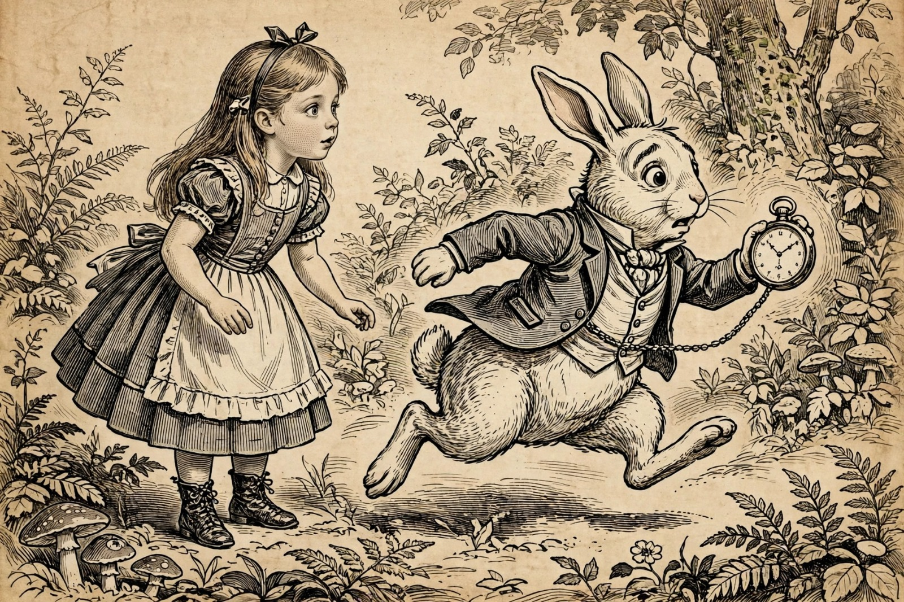

Chapter 1: Down the Rabbit-Hole

Alice was beginning to get very tired of sitting by her sister on the bank, and of having nothing to do: once or twice she had peeped into the book her sister was reading, but it had no pictures or conversations in it, 'and what is the use of a book,' thought Alice 'without pictures or conversations?'
So she was considering in her own mind (as well as she could, for the hot day made her feel very sleepy and stupid), whether the pleasure of making a daisy-chain would be worth the trouble of getting up and picking the daisies, when suddenly a White Rabbit with pink eyes ran close by her.
There was nothing so very remarkable in that; nor did Alice think it so very much out of the way to hear the Rabbit say to itself, 'Oh dear! Oh dear! I shall be late!' But when the Rabbit actually took a watch out of its waistcoat-pocket, and looked at it, and then hurried on, Alice started to her feet, for it flashed across her mind that she had never before seen a rabbit with either a waistcoat-pocket, or a watch to take out of it, and burning with curiosity, she ran across the field after it, and was just in time to see it pop down a large rabbit-hole under the hedge.
In another moment down went Alice after it, never once considering how in the world she was to get out again.
The rabbit-hole went straight on like a tunnel for some way, and then dipped suddenly down, so suddenly that Alice had not a moment to think about stopping herself before she found herself falling down a very deep well.
Either the well was very deep, or she fell very slowly, for she had plenty of time as she went down to look about her and to wonder what was going to happen next. First, she tried to look down and make out what she was coming to, but it was too dark to see anything; then she looked at the sides of the well, and noticed that they were filled with cupboards and book-shelves; here and there she saw maps and pictures hung upon pegs.
'Well!' thought Alice to herself, 'after such a fall as this, I shall think nothing of tumbling down stairs! How brave they'll all think me at home!'
Down, down, down. Would the fall never come to an end? 'I wonder how many miles I've fallen by this time?' she said aloud. 'I must be getting somewhere near the centre of the earth.'
She was still falling, and she heard a little thump. She found herself on a heap of sticks and dry leaves, and the fall was over.
Alice was not a bit hurt, and she jumped up on to her feet in a moment: she looked up, but it was all dark overhead; before her was another long passage, and the White Rabbit was still in sight, hurrying down it. There was not a moment to be lost: away went Alice like the wind, and was just in time to hear it say, as it turned a corner, 'Oh my ears and whiskers, how late it's getting!'
She was close behind it when she turned the corner, but the Rabbit was no longer to be seen: she found herself in a long, low hall, which was lit up by a row of lamps hanging from the roof.
There were doors all round the hall, but they were all locked; and when Alice had been all the way down one side and up the other, trying every door, she walked sadly down the middle, wondering how she was ever to get out again.
Suddenly she came upon a little three-legged table, all made of solid glass; there was nothing on it except a tiny golden key, and Alice's first thought was that it might belong to one of the doors of the hall; but, alas! either the locks were too large, or the key was too small, but at any rate it would not open any of them.
Alice opened the little door and found that it led into a small passage, not much larger than a rat-hole: she knelt down and looked along the passage into the loveliest garden you ever saw. How she longed to get out of that dark hall, and wander about among those beds of bright flowers and those cool fountains, but she could not even get her head through the doorway.
She found a little bottle on the table that said 'DRINK ME'. Alice drank it and began to shrink smaller and smaller until she was only ten inches high.
Then she found a little cake that said 'EAT ME'. She ate it and grew larger and larger until her head hit the ceiling.
Poor Alice began to cry, and her tears made a large pool around her.